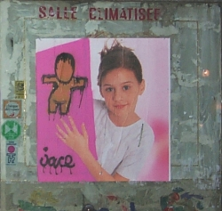

Partout des Gouzou
 Il m'arrive souvent de raconter ma vie sur ce site, et je vais recommencer aujourd'hui.
J'habite depuis peu à Paris dans le 20ème
arrondissement et je découvre le quartier. Cet arrondissement est décoré par de nombreux artistes urbains.
L'affiche peinte de la photo ci-contre m'a interpellé. Il s'agit bien d'un gouzou de Jace !
Jace
peint depuis 1992 des petits bonshommes sans
visage un peu partout à la Réunion : les Gouzou.
L'originalité de ce personnage est qu'il sait toujours s'adapter au
support qui reçoit sa peinture. Il vit beaucoup à la Réunion mais n'est apparemment pas une
espèce endémique puisqu'il en apparaît à Paris et que la ville du
Havre, dont Jace est originaire, en regorge. Stéphane Arlen m'a
indiqué qu'il y en découvrait un nouveau toutes les semaines sur l'île
mais certains comme le géant de la Ravine Saint Leu sont
vraiment exceptionnels. Jace a son propre site en flash où les
gouzou-spermatozoïdes tournent autour du menu (Le site a évolué
depuis cet article mais il y a toujours un site officiel des gouzou), mais il n'y a pas
beaucoup de Gouzou à découvrir et il faut lui préférer
la page de
Jace du site ARMVR.net (aujourd'hui disparu).
Pour connaitre un peu plus cet artiste zoreil,
je vous propose une interview sur un site de culture Hip Hop.
Plus de Gouzou
Après avoir fait le tour de ces sites, vous allez vous aussi voir ma galerie de gouzou partout, vous pourrez voir plus d'une centaine de Gouzou dans toutes les postures.
Jace envoie aussi souvent ses détournements d'affiches sur unenuit.fr.st, (site aujoud'hui disparu)
Vous pouvez aussi feuilleter Madakao, un des livres de Jace où on le voit dessiner des Gouzou sur des voiles.